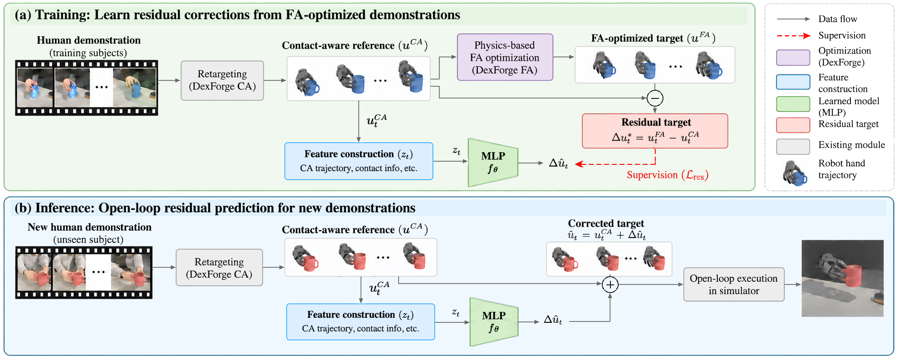
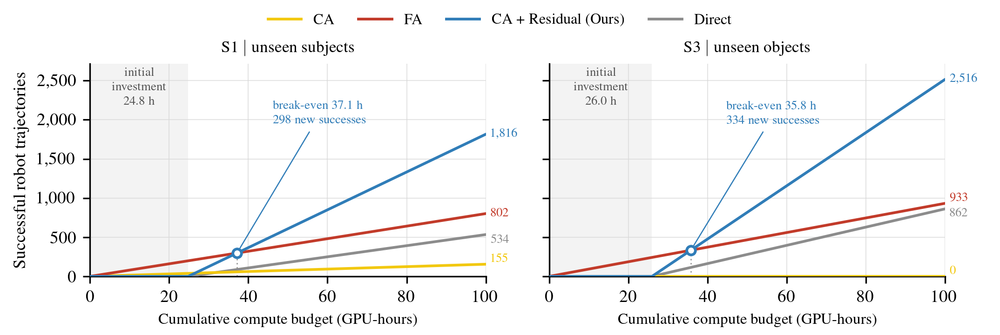

Amortizing Force-Aware Retargetingfor Scalable Human-to-Robot Data Generation
School of Electronic and Electrical Engineering
Kyungpook National University, Republic of Korea
* Corresponding author
Rollout Videos
Every test demonstration, executed open-loop in simulation by each method. Galleries share the same order, so the same position shows the same demonstration (until Only successes hides each method's failures). Click a clip to compare CA, direct prediction, and Ours side by side.
Contact-Aware (CA)
Direct FA Prediction (Ablation)
CA + Residual (Ours)
✓ / ✗ success / failure with the maximum object position error. Direct FA prediction is the ablation of Ours: same inputs, data, and MLP, but it regresses full FA controls instead of residuals to CA. Both learned methods show the seed-0 model, so their rates differ slightly from the three-seed means in the table. A common failure mode is insufficient grasp support from the position targets, causing the object to slip or drop.
Generalization to Unseen Subjects and Objects
We retarget DexYCB human demonstrations to a LEAP Hand in simulation and evaluate on the official S1 (unseen subjects) and S3 (unseen objects) splits, plus an exploratory S1×S3 setting combining both exclusions. A rollout succeeds when the maximum object position error stays below 50 mm.
| Method | Unseen subjects (S1) | Unseen objects (S3) | Both (S1×S3) |
|---|---|---|---|
| CA | 2.0 | 0.0 | 0.0 |
| Direct FA prediction | 9.9 | 16.2 | – |
| CA + Residual (Ours) | 33.7 ± 4.3 | 47.4 ± 3.5 | 55.6 ± 3.8 |
Execution success rate (%). Ours reports mean ± sample standard deviation over three seeds. Direct FA prediction uses the same inputs, data, and MLP but regresses full FA controls instead of residuals.
Abstract
We present a framework that amortizes force-aware retargeting by learning reusable control corrections from physics-optimized robot trajectories. Human demonstrations offer scalable data for robot learning, but kinematic retargeting does not guarantee physical executability, while physics-based optimization is costly for each demonstration. Our framework replaces per-demonstration force-aware optimization with learned residual corrections. This approach is implemented by training a lightweight MLP to predict the residual between contact-aware reference controls and force-aware optimized controls generated by DexForge. The predicted residuals are added to the contact-aware reference controls to generate corrected control trajectories for new demonstrations. Through simulation experiments retargeting DexYCB human demonstrations to a LEAP Hand, we achieve execution success rates of 33.7% on unseen subjects and 47.4% on unseen objects, substantially improving upon the respective 2.0% and 0.0% success rates of the contact-aware retargeting baseline. With reduced computational cost, our approach offers a promising direction for scalable generation of physically executable robot demonstrations.
Method Overview

Residual control learning. DexForge's contact-aware (CA) retargeting produces reference position-control targets \(u_k^{\mathrm{CA}}\) and a contact plan adapted to the robot hand; force-aware (FA) retargeting then optimizes these targets in a physics simulator to obtain \(u_k^{\mathrm{FA}}\). We learn the residual \(\Delta u_k^* = u_k^{\mathrm{FA}} - u_k^{\mathrm{CA}}\) (22-D: 6 global hand pose + 16 finger joints) with a lightweight MLP (two hidden layers of 256 units). Inputs are CA reference controls and velocities, planned fingertip contacts, the gravity direction in the object frame, and the reference object velocity.
Open-loop trajectory generation. For a new demonstration we run only CA retargeting, predict the residual, and execute the corrected target \(\hat{u}_k = u_k^{\mathrm{CA}} + f_\theta(z_k)\) open-loop at 100 Hz, replacing per-demonstration FA optimization.
Amortization and Scalable Data Generation

Including the initial cost of supervision generation and training (24.8 / 26.0 GPU-hours on an RTX 3090 for S1 / S3), residual prediction matches per-demonstration FA optimization in cumulative successful trajectories at 37.1 GPU-hours (S1) and 35.8 GPU-hours (S3), and yields more successful trajectories beyond these points. These projections are based on single-process timings and assume a sufficient supply of new demonstrations.